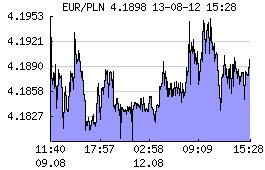
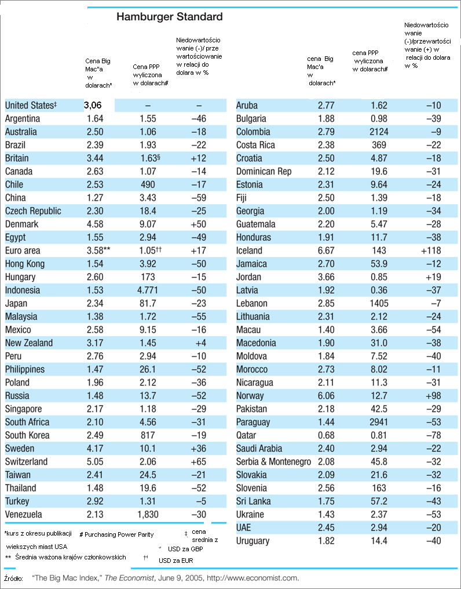

8. Pewne aspekty wymiany walut¶
Handel jako wymiana dóbr posługuje się pieniądzem jako środkiem usprawniajacym wymianę towarów. Nad pieniądzem, jego wartością czuwa Państwo lub Zwiazek Państw, które to, tylko na swoim terenie jest w stanie sprawować nadzór nad pieniądzem. Rynek wymiany walut istnieje skutkiem globalnego zasięgu handlu i lokalnego zasięgu waluty. To jedna z najstarszych usług oferowanych przez rynki finansowe. Wiele firm oferuje możliwość prowadzenia transakcji na tym rynku. W Internecie można znaleźć szereg podręczników handlu, spekulacji i odkrywania przygód i emocji związanych z handlowaniem na tym rynku przez każdego osobiście. Liczne reklamy zachęcają możliwością osiągania znaczących zysków. Rynek jako taki, ani prowadzenie transakcji nie jest niczym złym. Pamiętać jednak należy, że podobnie jak w przypadku jazdy samochodem gdzie warto najpierw nauczyć się jeździć na kursie by potem czerpać przyjemność z samodzielnej jazdy tak i w przypadku samodzielnych operacji na rynku finansowym należy unikać „przygód„ samodzielnych prób i błędów, które to błędy i pomyłki mogą być kosztowne.
Dostępność operacji jest duża i należy zwrócić uwagę na jeszcze jeden aspekt samodzielnej działalności na rynkach finansowych. Dokonując operacji i generując zyski z transakcji należy zwrócić uwagę dodatkowe ograniczenia poza wspominanym na każdym kroku ryzyku inwestowania. Pamiętajmy, że w rzeczywistości występują bolesne a opuszczane w podejściu dydaktycznym, koszty transakcyjne oraz pamiętać należy o obowiązku podatkowym. Zwracajmy uwagę na lokalizacje kont inwestycyjnych, które to w dobie Internetu mogą być zlokalizowane w dowolnym zakątku świata. Lokalizacja ta może być szczególnie bolesna jeśli nie znamy dokładnie zasad opodatkowania na lokalizacjach swoich kont ze względu na ograniczenia wynikające z regulacji podatkowych. Zasady te, podobnie jak i koszty transakcji mogą być różne dla rezydentów i nie rezydentów w danym kraju. Sprawdźmy najpierw co znaczą te słowa i jakie przepisy się w danym kraju stosuje w stosunku do tych dwu grup uczestników rynku. Może bowiem się zdarzyć, że przepisy ostrzej traktują osoby z poza kraju niż podmioty lokalne. Ponadto jeśli między państwem w którym powstaje zysk a państwem zamieszkania nie istnieje umowa o unikania podwójnego opodatkowania to wygenerowany zysk może zostać opodatkowany w każdym z obu państw.
8.1. Łatwość szukania arbitrażu - czyli kurs godziwy waluty¶
W poprzednich tekstach dotyczących wymiany walut w rozdziale dotyczącym rynku wymiany walut można było zauważyć powiązanie miedzy przyszłym kursem wymiany a stopą procentową depozytów w krajach walut. Widać powiązanie, ale nie jest to wiedza w pełni pozwalająca przewidzieć przyszłe zmiany wartości względnej walut.
Na wykresie pokazano zmiany kursu złotówki względem Euro w ciągu części wybranego dnia (12.08.2013). Widać znaczną zmienność kursu.
Powstaje pytanie co decyduje o cenie walut? Oraz prostsze, ale bardziej praktyczne, która waluta jest niedoszacowana lub przeszacowana?
Przejrzyjmy kilka sposobów funkcjonujących na rynku i pozwalających na odpowiedzi na te pytania.
8.1.1. Właściwe kursy wzajemne¶
W warunkach równowagi między kursami wymiany trzech walut zachodzi związek:
Czyli porównując kursy walut możemy określić czy kursy ich znajdują się w równowadze i spełniają pokazane równanie, czy też równanie nie jest spełnione i występuję możliwość arbitrażu. Arbitraż oznacza szanse na wygenerowanie dochodu z operacji kupna/sprzedaży.
Przykład
Niech przykładowo waluta 1- to dolar amerykański -USD, waluta 2 to funt brytyjski - GBP a waluta 3 to jen japoński – JPY.
Na rynku zauważyliśmy, że dealer z banku A (powiedzmy Deutsche Bank zamienił dolary na funty po kursie 1.5 dolara za funt. Dealer banku B (powiedzmy Citi) zamienił posiadane przez siebie funty na jeny japońskie po kursie 85 jenów za dolara. Dealer banku C (powiedzmy Barclays) zamienił posiadane jeny na funty po kursie 120 jenów za funta.
Od razu widzimy ze wzór (1) nie jest równością!!! Czyli występuje możliwość arbitrażu.
Porównując kursy z transakcji banku C i Banku A widzimy, że kurs jena do dolara powinien być:
£1.5/1 $ x 1$/120¥x80¥/£1= 1
Czyli kurs jena do dolara powinien być 80 jenów za dolara. Bank B zakwotował jednak 85 za dolar czyli jest możliwość zarobienia. Jak?
Sprzedać nasze funty za dolary:
Przykładowo przy kwocie wyjściowej 100.000 funtów: 100.000 GBP po 1,5 USD = 150.000 USD
Sprzedajemy bankowi B dolary po kursie 85 jenów za dolara:
Przykładowo: 150 000x 85 = 1 275 000 jenów
Jeny sprzedajemy po 120 za funta i otrzymujemy
Przykładowo: 1 275 000/ 120 = 106 250 funtów
Czyli zarobić można było :
106.250 - 100.000 = 6.250 funta.
Dlaczego czas przeszły?
Niestety nie mamy pewności czy takie kwotowanie nadal będzie akceptowane przez strony transakcji. Tak było przed chwilą ale nie wiemy czy będzie za chwilę. Systemy komputerowe transakcji arbitrażowych pracują na rynku światowym bez przerwy.
8.2. Parytet Siły Nabywczej (PPP)¶
Ta metoda prób określania zachowania się kursów wymiany walut w przyszłości opiera się na założeniu, że w przypadku nieobecności barier celnych i swobody handlu występuje zjawisko istnienia jednej i tej samej ceny na ten sam produkt (Prawo Jednej Ceny). Odpowiedź na pytanie czy ten produkt jest rzeczywiście taki sam pozostaje z założenia twierdząca, mimo szeregu wątpliwości jakie każdemu mogą się nasunąć.
Znając już zjawisko arbitrażu należy się z powyższym stwierdzeniem zgodzić. Występowanie różnicy cen na ten sam produkt spowoduje kupowania produktu na tanim rynku i oferowania go na droższym tak długo aż różnica zniknie.
Ceny na produkty mogą być wyrażane w różnych walutach obowiązujących w różnych krajach. Jednakże relacja musi być stała.
W przypadku np. złota wątpliwości są najmniejsze i jego cena powinna być taka sama we wszystkich krajach świata.
Cena złota w USA za dolary wynosi powiedzmy 300 USD za uncję. Cena złota w Unii Europejskiej wynosi, powiedzmy, 240 EUR za uncje. Czyli 300 dolarów to równowartość 240 Euro.
Czyli kurs wymiany waluty (spot) powinien wynosić 1,25 dolara za 1 Euro.
Inaczej mówiąc, cena złota w Europie jest równa
P$ = W$/€ P€= 1,25 x 240 = 300 USD
Cena złota jest taka sama bez względu gdzie je kupujemy.
No tak, złoto nie budzi wątpliwości, ale ile jest warte moje np. 100 PLN w porównaniu do innych walut?
W zasadzie najlepiej to widać jeśli porównany co możemy kupić za te pieniądze. Tylko jak znaleźć standardowy produkt, który podobnie jak złoto jest taki sam ale jest dostępny powszechnie?
Takim produktem jest Big Mac sprzedawany przez sieć „Mac Donalds”. Jest dostępny w prawie 100 krajach świata. Zakładając, że koszt jego wytworzenia jest taki sam wszędzie i marża zysku podobnie to możemy porównać siłę nabywczą lokalnej waluty np. do dolara i ocenić czy jej kurs jest niedowartościowany czy tez przewartościowany.
Więcej na temat tego indeksu można znaleźć:
http://www.economist.com/media/audio/burgernomics.ram
Porównywanie siły nabywczej waluty (PPP) przy pomocy Big Maca wydaję się być ryzykowną podstawą inwestycji na rynku Forex. Ale jest to jakaś metoda wyceny. Pakko i Pollard 1 wykazali w swych badaniach, że zasada siły nabywczej na podstawie hamburgera obowiązuje w długim okresie czasu jednakże odchylenia kursów walut również otrzymują się długo. Cóż, bariery celne istnieją więc i założenia PPP nie są w pełni spełnione. Mimo, że kursy odbiegają od relacji PPP to widać związek między względną inflacją a zmianami kursów walut.
A jeśli jeszcze nie widać to wprowadźmy „cenę realną”
Cena realna uwzględnia kurs wymiany w chwili zakupu dobra i uwzględnia inflacje w kraju i w inflacje waluty obcej. Realny kurs wymiany równa się
Gdzie \(Pi\) to indeks cenowy w kraju (d) i za granicą (f) w chwili \(t\).
Względne PPP pokazuje ze ruch zmian kursu powinien odzwierciedlać różnice inflacji miedzy krajami.
gdzie \(I_d\) to procentowa zmiania cen w kraju rodzimym a \(I_f\) procentowa zmiania cen za granicą.
Czyli w chwili \(t+1\) relacja kursów powinna spełniać powyższe równanie.
Czyli:
Albo inaczej:
Jeśli inflacja zagraniczna jest niska to zmiana kursu będzie równa:
gdzie \(\Delta S\) to procentowa zmiana kursu.
Tak, ale inflacje bardzo rzadko znamy w przyszłości. Znamy ją wstecz za dany okres. To wszystko to nasza ocena jak się mogą zachowywać kursy w przyszłości.
8.3. Międzynarodowy efekt Fishera¶
Równanie Fishera podaje związek między stopą procentową i inflacją wprowadzając stopę realną. Ten związek zachodzi w przypadku każdego kraju.
gdzie:
Albo inaczej zapiszemy to równanie
Co przybliżamy
jeśli ta równość zachodzi to zachodzi zarówno dla waluty krajowej, jaki i zagranicznej.
Czyli możemy zapisać taką równość w postaci:
Gdzie oznaczenie \(d\) odnosi się do waluty krajowej a \(f\) do zagranicznej.
Przepisując równanie inaczej :
Pamiętając związek Parytetu siły nabywczej (PPP)
Otrzymujemy:
co po pewnym prostym przekształceniu daje:
Gdzie :
Jak widać z powyższych rozważań, dwie uwagi nasuwają się.
Uwaga
Wszelkie teorie dotyczące przyszłych kursów walutowych wskazują na mechanizm zmian i kierunek w jakim zajdą ale nie mówią ani kiedy ( z wyjątkiem stwierdzenia, że” w odpowiednio długim czasie”) zajdą ani nie potrafią wskazać ile wyniosą.
Uwaga
Jeśli rynek jest w równowadze to inwestycje w czasowe depozyty w różnych walutach powinny dać ten sam wynik finansowy, w tym samym czasie. Nominalna stopa zwrotu będzie taka sama.
Cytując H. Allen i M. Taylora w ich artykule 2:
„podczas gdy prawa fizyki sa stałe i dobrze zdefiniowane, prawa rządzące rynkami finansowymi pozostawaj dużej mierze tajemnicą”
Jak widać rynek walutowy jest tego najlepszym przykładem. Na tym rynku hipoteza rynku efektywnego zdaje się sprawdzać najsłabiej.
Stwierdzenie „w odpowiednio długim czasie”, prosi się o komentarz, że jedno jest pewne w odpowiednio długim czasie, to, że umrzemy. Świetnym komentarzem do pierwszej uwagi jest komentarz A. Sławińskiego zawarty w jego książce ”Rynki Finansowe” PWE 2006 i dotyczący związku kursów walut z czynnikami fundamentalnymi a właściwie jej braku. Komentarz ten mówi, ze związki kursów walut z czynnikami fundamentalnymi przypominają pijanego marynarza, który schodzi ze wzgórza, Siła grawitacji „w odpowiednio długim czasie” sprowadzi go do podnóża wzgórza, ale droga jaką się będzie poruszał może być skomplikowana i nie do przewidzenia.
Dealerzy walutowi raczej nie bazują na wiadomościach fundamentalnych (stopy procentowe, PKB, etc.) w swych decyzjach dotyczących podejmowanych decyzji kupna/sprzedaży walut. Kierują się raczej trendami, analizą techniczną i tym podobnymi aspektami zmienności rynków.
- 1
Michael R. Pakko & Patricia S. Pollard, 2004. „Burger survey provides taste of international economics,” The Regional Economist, Federal Reserve Bank of St. Louis, issue Jan. (pdf)
- 2
H. Allen, M. Taylor, „Charts, Noise and Fundamentals in the London Exchange Market - Economic Journal .1990 no. 100 Suplement.-